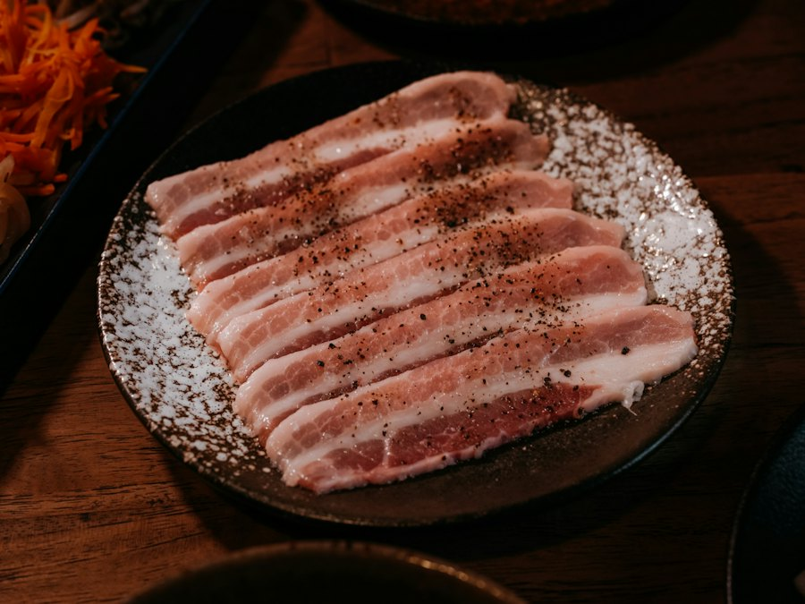
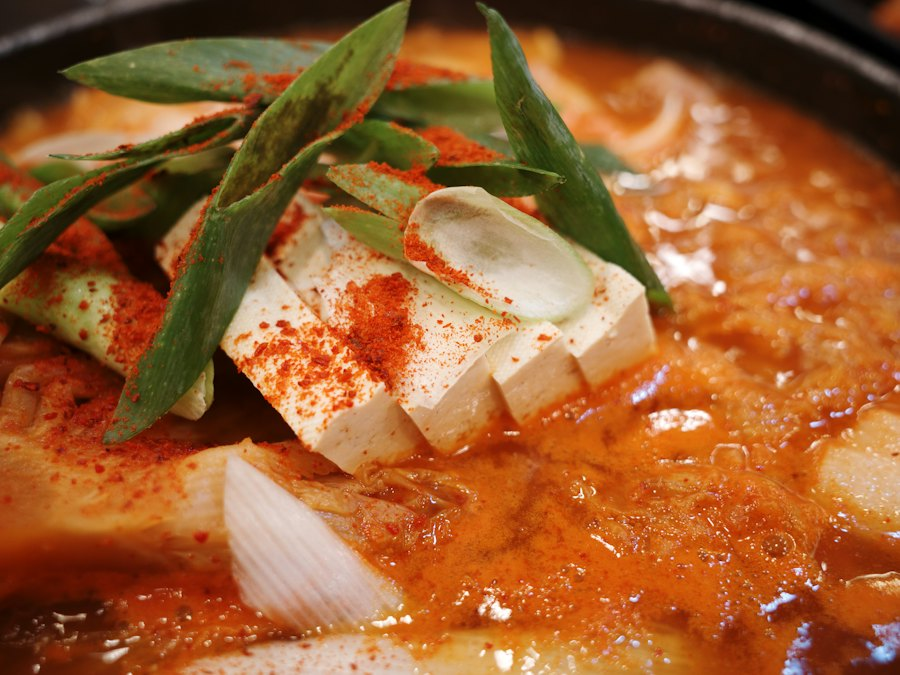

서귀포 중문 · 중문보건소 건너편
제주 흑돼지
난축맛돈,
구워 드려요
직원이 고기를 구워 드려요. 바질마늘소스와 함께 드셔 보세요.
English · 中文 · 日本語 ↓전화 064-739-0775 · 대표 번호 확인 필요

- 난축맛돈대표 메뉴
- 직원이 구워 드려요굽는 서비스
- 전용 주차장매장 전용
- 유아의자·단체석안내 있음
가기 전에 한눈에
천돈가, 한눈에
여행 일정을 짜거나 지금 갈 곳을 찾을 때 필요한 것만 모았어요. 지도 앱에 저장해 두면 제주에서 바로 다시 찾을 수 있어요.
- 어떤 집제주 흑돼지 구이집대표 메뉴 난축맛돈 · 직원이 고기를 구워 드려요 · 바질마늘소스
- 어디서귀포 중문, 중문보건소 건너편천제연로 280, 1층
- 언제11:30 ~ 23:00휴무일 · 브레이크타임 · 마지막 주문
- 가격대1인 기준 ○만 원대 (메뉴판 확인 후)
- 차로 가면전용 주차장○대 · 입구 위치 · 입구 사진
- 아이와유아의자 있어요
- 예약네이버 예약 안내 있음 · 전화 문의대기 여부 · 캐치테이블 등 다른 예약 앱 사용 여부
지도 앱에 저장·길찾기
앱에서 천돈가를 열고 저장(별·하트) 버튼을 눌러 두세요.
옮겼어요. 예전 주소(일주서로 873)에서 지금 자리로 넓혀 이전했습니다. 지도 앱에 옛 주소가 나오면 위 주소로 찾아 주세요.
메뉴·가격
난축맛돈 구이와 식사 메뉴
메뉴판을 받으면 중량·가격을 모두 적습니다. 받기 전 운영 버전: "가격은 전화로 물어봐 주세요"
| 메뉴 | 중량 | 가격 |
|---|---|---|
| 제주 흑돼지 난축맛돈구성(부위) | ○g | ○원 |
| 다른 구이 메뉴 (메뉴판 확인 후) | ○g | ○원 |
| 메뉴 | 가격 |
|---|---|
| 흑돼지김치찌개 | ○원 |
| 된장찌개 | ○원 |
| 열무국수 | ○원 |
| 한라산계란찜 | ○원 |
난축맛돈은 어떤 돼지인가요? 공급 증빙 확인 후 공개
- 개발농촌진흥청 국립축산과학원 난지축산연구소(현 난지축산연구센터)2014년 특허·상표 등록
- 교배제주 재래 흑돼지 × 랜드레이스
- 마블링등심 근내지방 평균 약 10.5%일반 돼지 등심(2~2.5%)보다 높게 조사됨
돼지고기에 바질마늘소스를 곁들여 드실 수 있어요. 다녀가신 분들의 리뷰는 네이버에서 보실 수 있어요.
소스 정식 이름 · 실제 소스 사진



전화 전에 30초
몇 분이, 언제 오시나요?
고르시면 전화로 말씀하실 내용을 정리해 드려요. 복사해서 네이버 예약에 적으셔도 돼요.
자주 묻는 질문
오기 전에 궁금한 것
고기는 직접 구워야 하나요?
직원이 고기를 구워 드리는 서비스가 있어요. 메뉴·시간대별 조건이 있으면
단체로 가도 되나요?
단체석이 있어요. 몇 분까지 되는지는 전화로 확인해 주세요. 최대 인원 · 예약 조건
예전 일주서로 873 가게와 같은 곳인가요?
네, 천제연로 280(중문보건소 건너편)으로 넓혀 옮겼어요.
외국 손님 · International guests
Jeju black pork BBQ in Jungmun
번역 검수 전 (사장님 확인 + 원어민 검수 후 배포) · 받는 결제수단 · 외국어 메뉴판
Cheondonga (천돈가) Jeju Jungmun Main Branch
Jeju black pork BBQ. Staff grill the meat for you. The signature menu is Nanchuk-matdon (난축맛돈), a pork breed developed by Korea's Rural Development Administration.
- Address
- 1F, 280 Cheonjeyeon-ro, Jungmun-dong, Seogwipo-si, Jeju
(across from Jungmun Public Health Center)
We moved from our old address, 873 Iljuseo-ro. Same restaurant. - Hours
- 11:30–23:00 closed days
- Phone
- +82-64-739-0775
- Parking
- Private parking lot
- Kids
- High chairs available
- Maps
- Use Naver Map or KakaoMap for directions. Google Maps has limited directions in Korea (as of March 2026).
Naver Map ↗ · KakaoMap ↗
Reviews & booking info (Naver) ↗
Show this to our staff
- 고기 구워 주세요.Please grill the meat for us.
- 유아의자 하나 주세요.One high chair, please.
- 메뉴판 보여 주세요.May I see the menu?
- 계산할게요.The bill, please.
천돈가 Cheondonga 济州中文（Jungmun）本店
济州黑猪肉烤肉店。店员会为您烤肉。招牌菜是 Nanchuk-matdon（난축맛돈，韩国农村振兴厅培育的猪品种）。
- 地址
- 济州特别自治道 西归浦市 천제연로（天帝渊路）280号 1楼
（中文（Jungmun）保健所对面）
本店已从旧址 일주서로 873 搬迁至此，是同一家店。 - 营业时间
- 11:30–23:00 休息日
- 电话
- +82-64-739-0775
- 停车
- 有专用停车场
- 儿童
- 有儿童椅
- 地图
- 在韩国导航建议使用 Naver 地图或 Kakao 地图。Google 地图在韩国的导航功能有限（截至2026年3月）。
Naver 地图 ↗ · Kakao 地图 ↗
评价与预约信息（Naver） ↗
请出示给店员看
- 고기 구워 주세요.请帮我们烤肉。
- 유아의자 하나 주세요.请给我们一把儿童椅。
- 메뉴판 보여 주세요.请给我看菜单。
- 계산할게요.我要结账。
천돈가 Cheondonga 濟州中文（Jungmun）本店
濟州黑豬肉燒烤店。店員會為您烤肉。招牌菜是 Nanchuk-matdon（난축맛돈，韓國農村振興廳培育的豬品種）。
- 地址
- 濟州特別自治道 西歸浦市 천제연로（天帝淵路）280號 1樓
（中文（Jungmun）保健所對面）
本店已從舊址 일주서로 873 搬遷至此，是同一家店。 - 營業時間
- 11:30–23:00 公休日
- 電話
- +82-64-739-0775
- 停車
- 有專用停車場
- 兒童
- 有兒童椅
- 地圖
- 在韓國導航建議使用 Naver 地圖或 Kakao 地圖。Google 地圖在韓國的導航功能有限（截至2026年3月）。
Naver 地圖 ↗ · Kakao 地圖 ↗
評價與預約資訊（Naver） ↗
請出示給店員看
- 고기 구워 주세요.請幫我們烤肉。
- 유아의자 하나 주세요.請給一張兒童椅。
- 메뉴판 보여 주세요.請給我看菜單。
- 계산할게요.我要結帳。
천돈가 チョンドンガ 済州・中文（チュンムン）本店
済州黒豚の焼肉店です。お肉はスタッフが焼いてお出しします。看板メニューはナンチュクマットン（난축맛돈、韓国農村振興庁が開発した豚の品種）です。
- 住所
- 済州特別自治道 西帰浦市 천제연로（天帝淵路）280 1階
（中文（チュンムン）保健所の向かい）
旧住所 일주서로 873 から移転しました。同じお店です。 - 営業時間
- 11:30–23:00 定休日
- 電話
- +82-64-739-0775
- 駐車場
- 専用駐車場あり
- お子さま
- ベビーチェアあり
- 地図
- 道案内は NAVERマップ か カカオマップ をご利用ください。Googleマップは韓国では経路案内が制限されています（2026年3月時点）。
NAVERマップ ↗ · カカオマップ ↗
口コミ・予約案内（NAVER） ↗
スタッフに見せてください
- 고기 구워 주세요.お肉を焼いてください。
- 유아의자 하나 주세요.ベビーチェアをひとつお願いします。
- 메뉴판 보여 주세요.メニューを見せてください。
- 계산할게요.お会計をお願いします。
다녀가신 분들의 리뷰와 예약 안내는 네이버에서 보실 수 있어요.